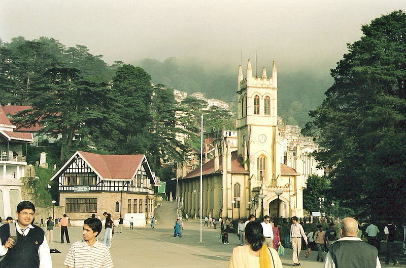
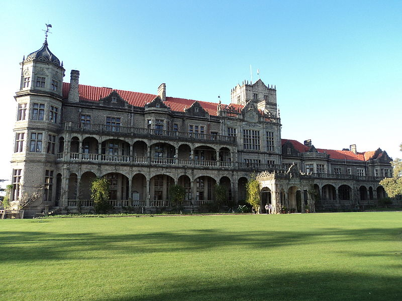
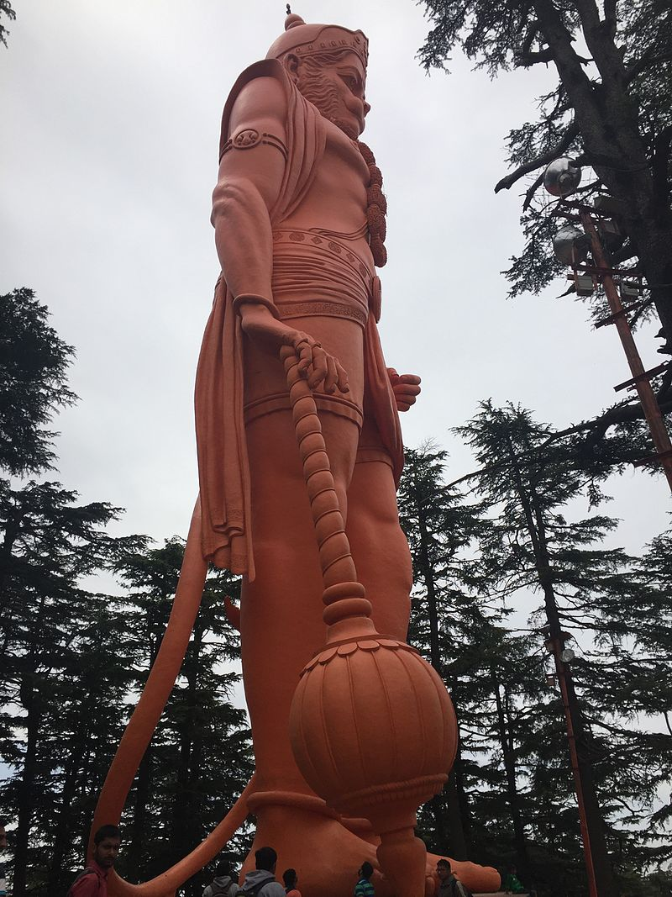
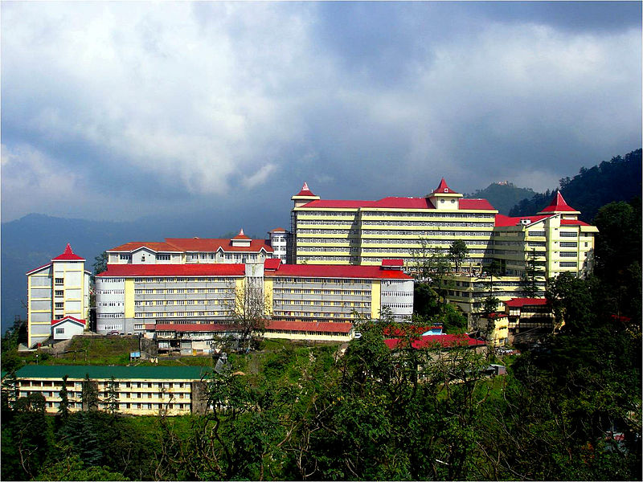

Shimla district of Himachal Pradesh lies between longitude 77.00" and 78.19" east and latitude 30.45" and 31.44" north, with its headquarters in Shimla. It is surrounded by Mandi and Kullu in the north, Kinnaur in the east, Uttarakhand in the southeast, Solan to the southwest and Sirmaur in the south. The elevation of the district ranges from 300 metres (984 ft) to 6,000 metres (19,685 ft). As of 2011 it is the third most populous district of Himachal Pradesh (out of 12), after Kangra and Mandi. It is the most urbanized district of Himachal Pradesh. The most commonly practised religion in the district is Hinduism. Hindi and Pahari are the languages spoken. Tourism and agriculture/horticulture are the majors source of income
The Ridge road is a large open space, located in the heart of Shimla, the capital city of Himachal Pradesh, India. The Ridge is the hub of all cultural activities of Shimla. It is situated along the Mall Road, which is the famous shopping center of Shimla. Most major places of Shimla like Snowdon, Mall, Jakhoo hill, etc. are connected through the Ridge. It runs east to west alongside the Mall Road, and joins it at the Scandal Point on the west side. On the east side, The Ridge road leads to Lakkar Bazaar, a wooden crafts market. It's the major landmark and the most easily recognized face of the hill station.
Underneath the Ridge, large water tanks are placed from which water is supplied to the British era tourist town. The Ridge houses the city's lifeline in terms of water reservoir, with a capacity of 1000000 gallons of water, beneath it. Because of the fact that these tanks are significantly large in size, they have been used as the main water supply for Shimla. [1]The reservoir is stated to have been constructed in the 1880s, without using any cement and only lime mortar was used. The Ridge is famous for the various government functions and fairs that are held here. It is usually the venue for all such celebrations and events. The most famous festival that is held at the Ridge is the Summer Festival. This famous festival is held during the months of April or May and the whole of Shimla comes alive with colors and a riot of activities. Prominent landmarks on The Ridge include Christ Church, a neo-Gothic structure built in the 1850s, and a Tudorbethan-styled library building.
The Indian Institute of Advanced Study (IIAS) is a research institute based in Shimla, India. It was set up by the Ministry of Education, Government of India in 1964 and it started functioning from 20 October 1965 The building that houses the institute was originally built as a home for Lord Dufferin, Viceroy of India from 1884–1888 and was called the Viceregal Lodge.[2] It housed all the subsequent viceroys and governors general of India. It occupied Observatory Hill, one of the seven hills that Shimla is built upon.
The building was designed by Henry Irwin, an architect in the Public Works Department. The Viceregal Lodge had electricity as early as 1888, much before the rest of the town of Shimla.[2] The building also was equipped with a sophisticated firefighting mechanism through wax-tipped water ducts. Many historic decisions have been taken in the building during the Indian independence movement. The Simla Conference was held here in 1945. The decision to carve out Pakistan and East Pakistan from India was also taken here in 1947. After India gained independence, the building was renamed Rashtrapati Niwas and was used as a summer retreat for the president of India. However, due to its neglect, Dr. S Radhakrishnan decided to turn it into a centre of higher learning. The summer retreat of the president was shifted from here to a building known as "The Retreat" situated in Chharabra, on the outskirts of Shimla.
Jakhoo Temple is an ancient temple in Shimla, dedicated to Hindu deity, Hanuman. It is situated on Jakhoo Hill, 2.5 km /1.3 miles east from the Ridge, Shimla at a height of 2,455 m (8,000 feet) above sea level. Shimla's highest peak offers a panoramic view of the Shivalik Ranges and the town of Sanjauli. An ancient "Lord Hanuman" temple is there and every year a big festival is held on Dussehra. You can go to the temple by foot (a steep climb) from Ridge (path behind the church) or can hire a pony/horse.
One legend goes that Lord Hanuman stopped there to rest while he was searching for the Sanjivni Booti to revive Lakshmana in the Epic Ramayana. On arrival at the temple signs advise visitors to secure all personal belongings and beware of the monkeys, which are everywhere. This is appropriate as the temple is in honour of the Monkey Lord. Visitors must remove shoes (and leave them in the "shoe house") before entering the temple. Just on the outskirts of this erstwhile summer capital of the British raj, a giant 108-feet-high idol of Hanuman was unveiled at Jakhoo Hanuman temple in 2010, overlooking the entire city. Given its titanic size, it would not be out of place to say that monkeys will be omnipresent in this famous tourist destination which already has a large monkey population. At 108 feet at the highest altitude of over 8100 feet and constructed at a cost of Rs 1.5 crores, it surpasses the statue of 'Christ the Redeemer', which measures at 98 feet and stands at an altitude of 2296 feet in Rio de Janeiro, Brazil.
Indira Gandhi Medical College (IGMC), formerly the Himachal Pradesh Medical College (HPMC), is a state-owned medical college and hospital in Shimla in the state of Himachal Pradesh in India. It was established in 1966 as the Himachal Pradesh Medical College (HPMC), and assumed the present name in 1984. On 29 June 2013, Himachal Pradesh Health minister Kaul Singh Thakur said that Indira Gandhi Medical College (IGMC) would be upgraded on the analogy of All India Institute of Medical Sciences (AIIMS) under the Pradhan Mantri Swasthya Sewa Yojana, (PMSSY).
Thakur revealed about his meeting with Union health minister Ghulam Nabi Azad and the proposal for granting the AIIMS status to IGMC was under consideration of the government of India. Thakur added that the endeavour of the state government was to develop IGMC as a prestigious institute so that it can provide qualitative and better health services to the people of the state. The Department of Radiotherapy & Oncology of this institution is an approved Regional Cancer Centre (RCC) of India.[3][4] It was founded in 1977 as a Tumor Clinic of the hospital and was granted the status of RCC in 2001.